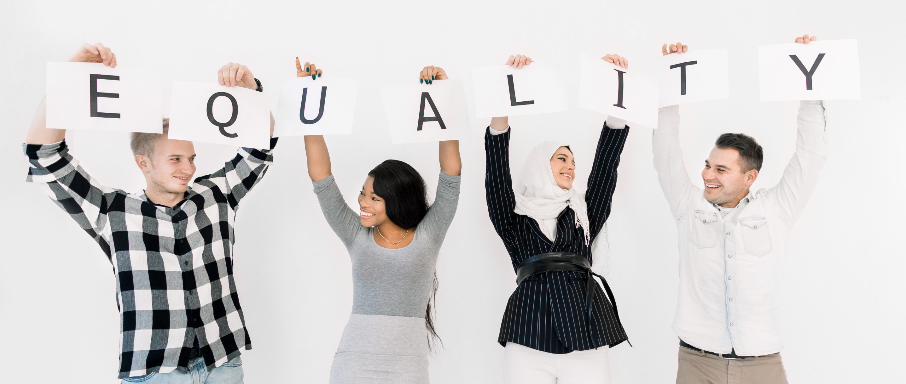
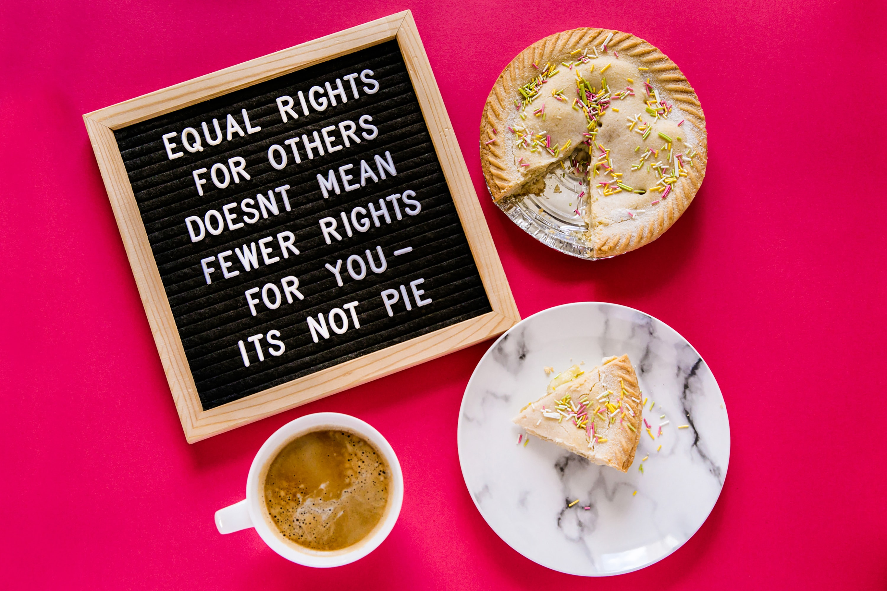
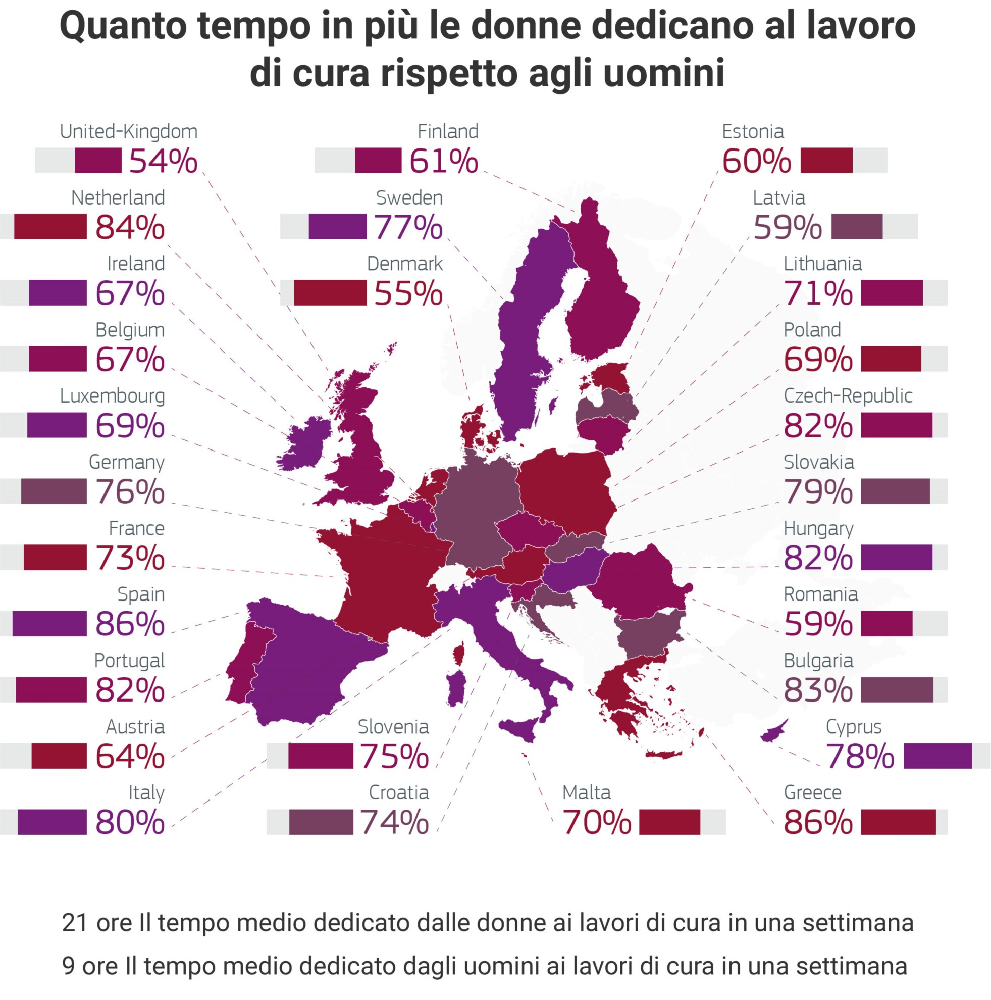
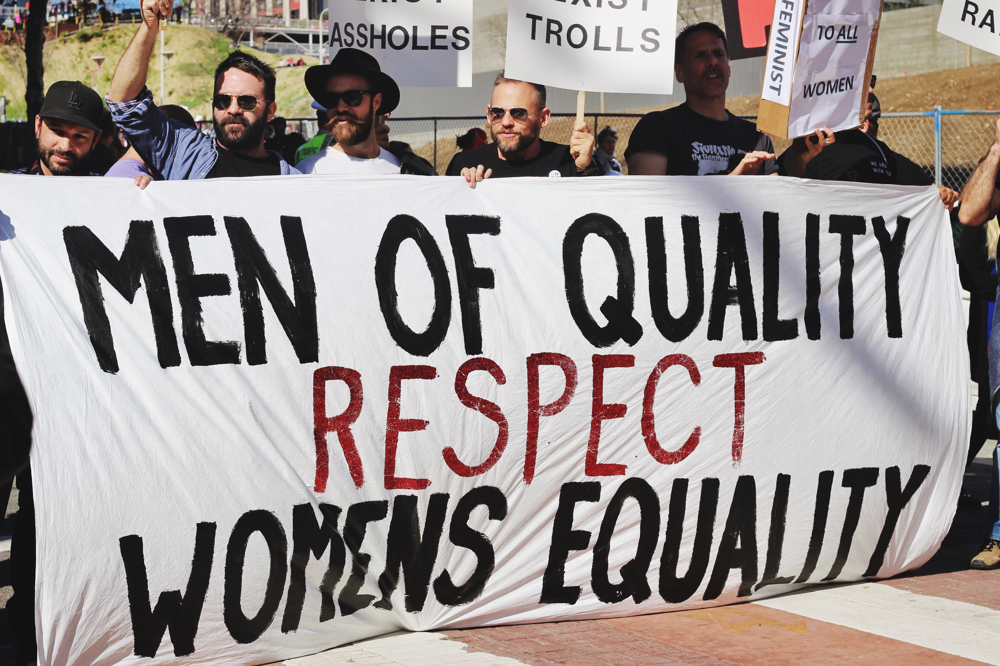

ITALIA 2021. LA DONNA È ANCORA CONSIDERATA UN OGGETTO?
Eleonora Di Cianni, 21 Settembre 2021
13 min

Crescere come femmina nel 2021 non è ancora molto allettante. Fin da piccola sei abituata ad avere
addosso il doppio dell’ansia dei genitori, in quanto “sei la figlia femmina”. Devi stare attenta quando esci e
cercare di stare sempre in gruppo, perchè sei più a rischio. Non puoi ancora liberamente decidere come
vestirti e stare al 100% serena, perchè ci sono sempre sguardi che ti spogliano con gli occhi e commenti
non richiesti, ma questo è il minore dei rischi. C’è sempre la possibilità di essere definita “tr**a”
semplicemente perchè sei donna e mi fermo qui.
Si, se non si è capito sono una ragazza e come tale sono soggetta a tutte queste cose, ma penso che tutte
possano capirmi, vero? Il brutto è che molte uomini a sentir parlare di femminismo, ancora alzano gli occhi
al cielo.
Con questo articolo mi propongo di cercare di far capire, parlando anche di esperienze personali o di
ragazze che conosco, come ci si sente ad essere donna nel 2021.
Parentesi storica
Permettetemi una breve parentesi storica. L’Italia è stata fin da sempre soggetta a una società di tipo patriarcale, che la Treccani definisce come un
" tipo di sistema sociale in cui vige il 'diritto paterno', ossia il controllo esclusivo dell'autorità domestica, pubblica e politica da parte dei maschi più anziani del gruppo "
Non starò qui ad approfondire questo tema, ma molto interessante a riguardo, è “Perchè abbiamo un problema di genere”, un articolo scritto da una ragazza dell’università Bicocca di Milano, in cui analizza com’è nato questo sistema, le ripercussioni sulla donna e nella storia.
Per spiegare perché ho accennato a questo fenomeno citerò una frase del suo articolo :
" L’esistenza di un’ideologia patriarcale secolare ha implicato il radicamento di un’impostazione maschilista e misogina della realtà che si mescola costantemente con la nostra prassi quotidiana "
Insomma, la donna non è considerata come una persona con desideri, diritti e volontà, ma come un oggetto che passa di proprietà dal padre al marito.
Solo con un susseguirsi di eventi storici che partono dalla Rivoluzione francese, passando ai movimenti femministi delle donne inglesi, la rivoluzione industriale, fino ad arrivare alle guerre mondiali, che la donna inizia a battersi per essere riconosciuta come una persona con diritti e possibilità pari all’uomo. Per approfondire questo percorso vi lascio un link ad un articolo su studenti.it

In Italia il diritto di voto venne riconosciuto solo nel 1948. Negli anni seguenti le donne continuarono a lottare per tutta una serie di diritti:
- Dal 1963 al 1999 la possibilità di entrare in Magistratura, nel corpo di Polizia e infine nelle Forze Armate
- 1970 riconosciuto il divorzio
- 1975 il diritto di famiglia, con il riconoscimento anche dei figli nati al di fuori del matrimonio
- 1978 diritto all'aborto
- 2013 sono regolamentati i provvedimenti penali da attribuire alla violenza di genere nei confronti delle donne, come lo stalking e i maltrattamenti
- 2019 il revenge porn è riconosciuto come reato
Tutto ciò è già un bel passo in avanti, ma il processo di parità di genere non è ancora concluso.
Situazione attuale
Il forum economico mondiale dal 2006 fornisce il Global Gender Gap, un quadro che mostra il divario di genere, attualmente in 156 stati. Gli ambiti presi in esame sono 4:
- politica
- economica
- educazione
- salute
L'Italia si aggira tra la 70° (2018) e la 63°(2021) posizione nella classifica globale generale, collocandosi agli ultimi posti in ambito europeo. Le stime per il raggiungimento della parità di genere ammontavano a 99.5 anni. La pandemia ha avuto però conseguenze inaspettate, allungando il periodo fino a 135,6 anni. - Fonte: il Sole 24 ore
Anche le condizioni a livello nazionale sono degenerate nel 2020 in cui è stato registrato un grosso calo fino alla 76° posizione, da cui ci siamo già ripresi. Perché questo brusco calo?
- Perchè il periodo di covid ha portato un incremento della violenza sulle donne: 71,9% le richieste di aiuto in più al 1522 (numero anti-violenza e stalking) tra marzo e ottobre 2020, rispetto allo stesso periodo nell’anno. - Fonte: Sky tg24
- Tanti i posti di lavoro che le donne sono state costrette ad abbandonare e/o l' aumento delle ore da dedicare alla casa e ai figli durante la situazione emergenziale
Altre situazioni critiche di cui bisogna tener contro negli ultimi anni sono:
- Stipendi non equi (circa il 5% nel 2017) e posizioni lavorative importanti occupate principalmente da uomini (nel 2019 solo il 28% delle donne occupava la posizione di manager) - Fonte: Istat

- Revenge porn: secondo i dati diffusi dalla Polizia, nel 2020 ci sono stati circa 718 casi di diffusione illecita di immaginio video “sessualmente espliciti”, con l’81% di vittime di sesso femminile ( circa 2 vittime al giorno ) - Fonte: la Repubblica
- Dall’inizio del 2021 ci sono già stati 83 casi di femminicidio - Fonte: il Messaggero
Questi dati vogliono dare un quadro generale della situazione a livello nazionale, ma ora basta con i numeri. Ci sono altri argomenti su cui vorrei concentrarmi e che vorrei portare alla vostra attenzione.
Oggettificazione del corpo femminile
È risaputo che secondo canoni maschilisti e misogini, la donna ha un ruolo ben preciso nella società: è un oggetto, utile alla riproduzione e alla cura degli eredi, un corpo su cui sfogare i propri istinti e i propri desideri. Fortunatamente questa tendenza sta sfumando nel tempo.
Attualmente alla donna è riconosciuta sia la possibilità di realizzarsi in ambito lavorativo, che avere una famiglia e un marito che la rispetti e la ritenga sua pari. In realtà spesso c’è ancora la tendenza a vedere la donna come la principale responsabile dei figli e della casa.

- Fonte: Corriere della Sera
Anche la tendenza a vedere la donna come un oggetto non è ancora completamente svanita. Nel 2019 l’Università di Trento è riuscita a dimostrare l’oggettificazione del corpo della donna. Gli studiosi hanno mostrato un oggetto prima in mezzo ad un gruppo di donne e poi in un gruppo di uomini, misurando l’attività cerebrale con un elettroencefalogramma. È emerso che l’oggetto risulta meno visibile quando è in un contesto di donne in intimo o in bikini. Per approfondire meglio lascio il link all’articolo pubblicato dal giornaletrentino.it. Questo fenomeno avviene a livello inconscio sia nell'uomo che nella donna.
L’articolo prosegue con un commento del professore firmatario Jeroen Vaes,
“crescere e vivere in una società che giudica prevalentemente le donne per come appaiono innesca insicurezza sul proprio aspetto fisico e, nel tempo, un maggior rischio di sviluppare disturbi alimentari e disfunzioni sessuali”.
Se a queste considerazioni uniamo il body shaming, ovvero
" la tendenza a commentare sui social network, in modo negativo, la forma fisica delle persone, in particolare delle donne "
il rischio di fare sentire una donna inadatta e "spingerla verso un comportamento alimentare scorretto" è ormai alto. L'articolo di Focus "Rischi da 'body shaming', insulti social sulla forma fisica a 1 donna su 2" sensibilizza appunto su questo argomento, offrendo anche dei suggerimenti per i soggetti a rischio.
Slut-shaming e revenge porn
Non è insolito prima o poi, già in giovane età, sentirsi definire “tr**a” o “put***a” da qualcuno. Il fatto più preoccupante è che spesso siamo noi stesse ragazze a definirci tali. In generale a mio parere, i motivi possono essere i più vari: un senso di inferiorità, il modo di vestirsi, cambiare più partner, lo slut-shaming, ecc.
Per chi non lo sapesse lo slut-shaming, di cui io stessa ho sentito parlare solo da poco, è secondo Wikipedia:
" un neologismo nato in ambito filosofico femminista per definire l'atto di far sentire una donna colpevole o inferiore per determinati comportamenti o desideri sessuali che si discostino dalle aspettative di genere tradizionali o ortodosse, o che possano essere considerati contrari alla regola naturale o soprannaturale/religiosa. "
Risulta ancora in parte diffusa, l’idea che la donna debba sottostare ad un canone di purezza e chiunque se ne dissoci viene classificata come una poco di buono, attaccata e criticata per i suoi desideri sessuali.
Vittime di questo fenomeno, sono ad esempio le donne soggette a revenge porn che la Treccani definisce come:
" pornografia della vendetta, quella pratica di pubblicare in rete materiale imbarazzante come un video hard fatto in casa, oppure un’immagine dell’ex nuda. Tutto senza il consenso dell’interessata, spesso condividendo anche nome, indirizzo o riferimenti che facciano capire chi è lei "
Alcuni di questi contenuti finiscono su Telegram, dove è stato dimostrato nello scorso 2020 da un’inchiesta di Wired.it, l’esistenza di un network con oltre 43 mila iscritti in due mesi, 21 canali tematici collegati e un volume di conversazioni che si aggira sui 30mila messaggi al giorno. Le foto, che spaziano dal revenge porn alla pedo-pornografia, sono scambiate come merce, riportandoci quindi al concetto del genere femminile come oggetto.
Catcalling
Passiamo ad un altro tema caldo degli ultimi tempi: il catcalling. Sarà capitato a tutte che mentre camminiamo per strada, che sia giorno, pomeriggio o sera, ci sentiamo addosso sguardi, sentiamo fischiare, battute, complimenti, insomma di tutto di più. I più coraggiosi oseranno incolparci per come ci vestiamo, ma non sanno invece che molti episodi, si verificano anche quando indossiamo tute giganti che non lasciano trasparire nemmeno l’ombra di una forma del corpo.
In ogni caso non si può essere giudicate per come ci vestiamo, non si può dare la colpa di una molestia alla vittima per come questa si è vestita. Si parla in questo caso di victim blaming che sempre Wikipedia lo definisce come:
La colpevolizzazione della vittima consiste nel ritenere la vittima di un crimine o di altre sventure parzialmente o interamente responsabile di ciò che le è accaduto e spesso nell'indurre la vittima stessa ad autocolpevolizzarsi
La società italiana fa spesso così. Negli episodi sopra elencati: femminicidio, revenge porn e catcalling, si finisce spesso per colpevolizzare la vittima e in qualche modo cercare di spiegare e dare un senso al comportamento del carnefice.
Un video che espone e denuncia tutti questi fatti è quello pubblicato da Chiara Ferragni di cui vi lascio il link.
Molestie minori
Per molti, probabilmente, gli argomenti fino ad ora trattati sembrano troppo lontani, impedendogli di rendersi conto di quanto in realtà siano diffusi. Proviamo quindi a parlare di temi minori, ma sicuramente più vicini.
Mi rivolgo a voi uomini, visto che la gran maggioranza delle donne avrà provato ciò che sto per dire in prima persona. Provate a chiedere alle vostre ragazze, sorelle, amiche e perchè no anche alle vostre madri. Provate a chieder loro se camminando per strada sono mai state seguite. Chiedete se in metropolitana, bus, treno, c’è mai stato qualcuno che sfruttando la scusa dell’affollamento, si sfrega, le palpa e in alcuni casi è arrivato addirittura a masturbarsi oppure, se quando indossa la gonna, le è capitato che le facesse una foto da sotto.
Sembra fantascienza invece è attualità.
Riflessioni
Essere una donna in Italia nel 2021 non è ancora molto semplice. In questo articolo mi sono limitata ad accennare vari episodi e/o crimini, di cui ogni giorno si sente parlare.
Ho affrontato i temi in realtà in modo molto superficiale, per poter presentare la situazione generale, tralasciando moltissimi altri aspetti che andrebbero discussi.
L’obiettivo dell’articolo è anche quello di riportare casi minori, piccole molestie, che buona parte del mondo femminile subisce.
Bisognerebbe rendersi conto dell’impatto delle proprie parole e/o azioni. Il mio modesto suggerimento è quello di imparare a trattare le donne, anche quelle a voi lontane, come quelle che fanno parte della vostra vita e a cui tenete.
Quindi, “La donna è ancora considerata un oggetto nel 2021?” La risposta la lascio a voi.
E ricorda...
